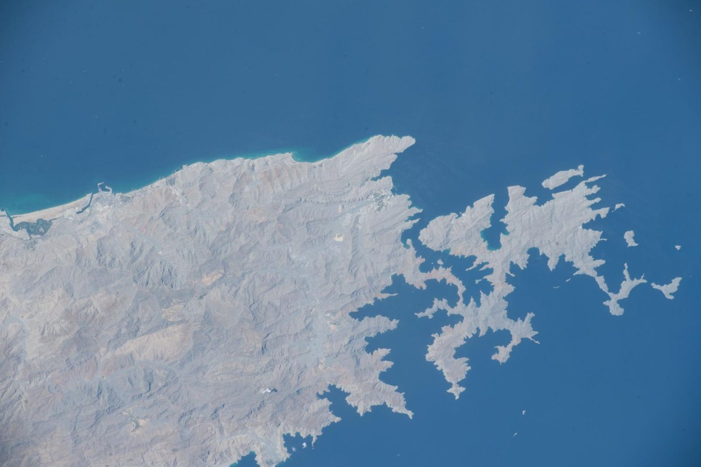
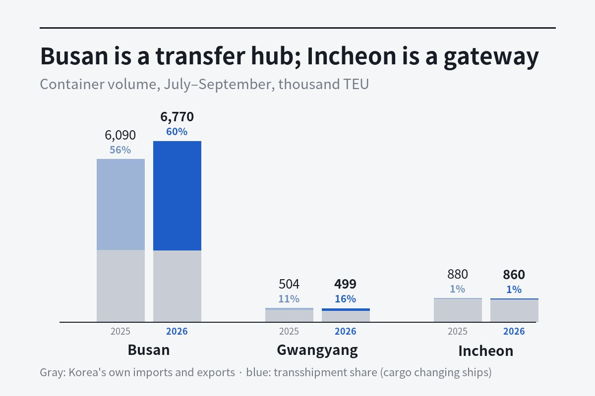

産業
記事一覧

韓国、大企業に安全記録の公表義務 下請け労働者の死亡も元請けの名前で
韓国で常時雇用500人以上の企業、工事額の大きい建設会社、公共機関は、毎年4月30日までに安全保健の状況を公表しなければならず、現行法令どおりなら初回期限は2027年4月30日です。下請けを使う元請けは、自社の事業場で事故により亡くなった下請け労働者の状況も記載します。公表しなければ過料は最大1,000万ウォン(約7,400ドル)です。

韓国発の北米西岸向けコンテナ運賃、1年で82%上昇 日本向けはほぼ横ばい
11月1〜20日の韓国の輸出が前年の2倍になった日、船の側の数字を見ました。韓国関税庁の申告運賃で、10月の韓国発米国西岸向け40フィートコンテナ運賃は前年同月より82%、EU向けは48%上がりました。日本向けは2.9%、中国向けは6.3%下落でした。6〜10月に積まれて出たコンテナは米国向けが17%、EU向けが70%増えています。

韓国の輸入車、金額で中国製がドイツ製を抜く 日本製は8.8%減
2026年1〜10月に韓国が輸入した乗用車は、中国の工場で造られた車が42億2,000万ドルで、ドイツ製の41億9,000万ドルを上回った。中国製の92.0%は電気自動車。日本製は5億9,000万ドルで、前の年より8.8%少ない。

韓国産石油製品、日本向けは量が3割減 1トン当たりの輸出額は8割高
韓国関税庁のデータから計算すると、2026年3〜10月に韓国から日本へ輸出された石油製品は333万トンで前年同期より30.3%減った一方、1トン当たりの平均輸出額は692ドルから1,259ドルへ81.9%上がった。韓国政府は3月からガソリン・軽油・灯油の輸出を前年同月の量までに抑えており、11月の輸出分から軽油に限り110%まで条件付きで緩めた。

釜山の積み替え、7〜9月に2割増 日本との間のコンテナはほぼ釜山経由
2026年7〜9月に釜山港が扱ったコンテナは677万TEUで、その6割は他の国の貨物がここで船を乗り換える積み替え貨物だった。韓国海洋水産部は、台風で中国の港が混雑し、釜山に寄る船が増えたと説明する。日本との間を行き来する実入りコンテナも、9割以上が釜山を通っている。

韓国産のり、日本向け価格が23%下落 輸出量はほぼ横ばい
韓国関税庁のデータから計算すると、2026年10月までの12カ月間、韓国から日本に輸出されたのり（乾のりなど食用海藻）は、重量が2.1%減にとどまる一方、1キロ当たりの価格が14.01ドルから10.83ドルへ22.7%下がり、輸出額は24.3%減った。一方、韓国のインスタントラーメンなど麺類の輸出は24.4%増の19億8,100万ドルで、日本向けも12.3%増えた。

アマゾンとユナイテッドはAI買い物代行を締め出し、ウォルマートは上限付きで購入を許す
ユナイテッド航空、アマゾン、JPモルガン、eBayは顧客が使うAIエージェントを締め出し、ウォルマートとShopifyは上限を決めて受け入れた。分かれ目は二つ。売り上げを誰が握るのか、AIが買い間違えたら誰が払うのか。

韓国スキンケアの輸出先、米国が中国を抜いて首位に 日本向けも14%増
韓国関税庁のデータから計算すると、2026年10月までの12カ月間、韓国のスキンケア製品の米国向け輸出は39.8%増の20億5,600万ドルとなり、2.5%減った中国向け（16億2,500万ドル）を上回った。日本向けは14.1%増の7億6,800万ドルで3位。ただ他の市場がそれ以上に伸びたため、輸出全体に占める日本の割合は8.0%から7.0%に下がった。

米国301条関税、日本と韓国は「合計12.5%」 ベトナム産はさらに12.5%上乗せ
米国は2026年7月24日から、数十の国・地域の製品に通商法301条の関税をかけている。日本産と韓国産は、通常の関税が12.5%に満たない品目で合計12.5%まで引き上げられるだけだが、ベトナム産とタイ産は通常の関税にさらに12.5%が上乗せされる。即席麺（通常関税6.4%）なら日本産・韓国産は12.5%、ベトナム産は18.9%になる。

原油は下がったのに、韓国のガソリン上限価格はなぜ動かないのか
韓国政府は精油会社がガソリンスタンドに卸すガソリンの上限価格を1リットル1784ウォン(約211円)に据え置いた。6回連続で、今回は12月11日まで。ブレント原油は10月平均より下がったが、6月末に上限を決めたときよりまだ3分の1ほど高い。上限を超えたコストはまず精油会社がかぶり、政府が四半期ごとにコストを基準に補塡すると約束している。

韓国の熱延鋼板輸入、日本産のシェアが65%に 中国産は反ダンピング関税で77%減
2026年1〜10月、韓国の日本産熱延鋼板の輸入は前年同期比13%増え、熱延輸入に占める日本産の比率は44%から65%に上がった。反ダンピング関税で中国産が77%減った穴を埋めた形だが、日本産の増加は最低価格の約束（価格約束）が始まった6月23日以降に集中している。台湾産は3.7倍、ベトナム産は8倍に増えた。

日本から韓国への船賃、逆方向の2.2倍に 米国発は4分の1以下
韓国関税庁が輸出入申告書をもとに公表する海上運賃では、2026年10月、40フィートコンテナを日本から韓国へ送る運賃は、韓国から日本へ送る運賃の2.2倍だった。1年前は1.6倍。日本から韓国の港に入るコンテナの41%は空なのに、日本発のほうが高い。一方、米国西海岸から韓国への運賃は逆方向のわずか24%だった。

「許可」を1回押しただけで8億500万ユーロ メタへの制裁金、なぜアイルランドではなくイタリアが
イタリアのデータ保護機関は11月14日、メタに8億500万ユーロ(約1,403億円)の制裁金を科した。Android版フェイスブックが、この機能だけの同意を取らずにイタリアの利用者の写真フォルダを読んでいたという判断だ。メタの欧州本部はアイルランドにあるのに、今回はイタリアが単独で動けた。同じことを韓国の法律に当てはめると、道は二つに分かれる。